本文将全局介绍 Flink 的整体架构。
系统架构
Components

JobManager
一个 application 对应一个 JobManager，JobManager 接收待执行的 application。application 包含一个 JobGraph 和 JAR （包含所有需要的classes,libraries 和其他资源）。
JobManager 将 JobGraph 转成 ExecutionGraph，ExecutionGraph中包含可以并发执行的 tasks。
JobManager 向 ResourceManager 申请需要的资源（TaskManager slots），一旦分配到足够的slots，则分发 tasks 到 TaskManager 执行。
执行期间，JobManager 负责中央协调，如协调checkpoint等
ResourceManager
负责管理 TaskManager slots，当 JobManager 申请 slots 时，ResourceManager 会通知拥有闲置 slots 的 TaskManager 提供 slots 给 JobManager 。
TaskManager
TaskManager 是 Flink 的工作进程，每个 TaskManager 提供一定数量的 slots ，slots的数量限制了 TaskManager 可以执行的 task 数。启动之后，TaskManager 向 ResourceManager 注册 slots 数，当接收到 ResourceManager 的分配通知后，会向 JobManager 提供一个或多个slots，紧接着 JobManager 将 tasks 分配到 slots 执行。执行期间，不同的 TaskManager 之间会进行数据交换
Dispatcher
提供 REST 接口供提交任务，一旦 application 被提交执行，就会启动一个 JobManager 。还运行 Web Dashboard。
Task Execution

图左边是JobGraph，包含5个operators，A和C代表source，E代表sink。因为最大并行度为4，所以此 application 至少需要4个 slots。A、B、D的并行度为4，会被分配到每一个slot，C被分配到了Slot1.1和Slot2.1，E被分配到了Slot1.2和Slot2.2。
TaskManager在同一个JVM进程中多线程执行tasks。
高可用
实时应用程序通常设计成7*24的运行模式，因此应该保证 application 不停机。当进程出现故障时，第一步要重启失败的进程，第二步是重启 application 并恢复其状态。
TaskManager failures
假设一个Flink集群有4个 TaskManagers ，每个 TaskManager 提供2个 slots，所以一个 application 的最大并发为8。当其中一个 TaskManager 故障，可用的 slots 数就降为了6。此时，JobManager 会向 ResourceManager 申请新的 slots。在standalone模式下，将永远申请不到新的 slots，JobManager 也就不能重启 application，直到获得足够的 slots。重启策略决定 JobManager 重启 application 的次数以及重启的间隔。
JobManager failures
比起 TaskManager 故障，JobManager 故障是更具有挑战性的问题。JobManager 控制 application 的执行，保存执行相关的元数据，如指向完整 checkpoints 的指针等。如果 JobManager 进程消失，application 将不能再继续执行，因此必须解决 JobManager 的单点故障问题。Flink提供了高可用模式，在当前 JobManager 进程消失时，将 JobManager 负责的功能和元数据传递给另一个 JobManager，依赖于 zookeeper。高可用模式下，JobManager 会将 JobGraph 和其所需的元数据，如 application 的jar包文件，持久化到远程公共存储上，并将存储路径写到 zookeeper 上。
执行期间，JobManager会收到各个task checkpoints 的状态处理，当一次 checkpoint 完成，即所有task都将状态持久化到远程存储上了，JobManager 将状态处理持久化到远程存储，并将存储路径写到 zookeeper 上。因此，当 JobManager 故障时，需要结合 zookeeper及远程存储来恢复 application。

当JobManager故障，其所属 application 的所有 tasks 都会自动取消，新的 JobManager 将会接管：
- 从 Zookeeper 获取远程存储路径，取得 JobGraph 、jar包文件、上一次 checkpoint 的状态处理
- 从 ResourceManager 申请 slots ，继续执行 application
- 重启 application , 并根据上一次完整的 checkpoint 重置所有 tasks 的状态
yarn模式下，Flink 尚存的进程会触发故障 JobManager 和 TaskManager 的重启。standalone模式下，Flink 不提供重启失败进程的方法，因此需要运行备用的 JobManager 和 TaskManager 。
数据传输

每个sender task至少需要4个 network buffer，来发送数据到4个 receiver task 。每个 receiver task 至少需要4个 network buffer 来接收数据。不同 TaskManager 之间的数据传输使用相同的网络连接，多路复用。
Credit-Based 流控
Flink流控相关博客：Flink网络流控及反压剖析
Task Chaining
为了减少本地 tasks 间的通信成本，产生了Task chainning技术。想要chain在一起的operators，必须具有相同的 parallelism ，且由 local forward channel 相连。

Task chaining 可以减少本地本地 tasks 间的通信成本，operators 的 functions 被整合在一个线程中执行，function 产生的结果数据通过方法调用传递给下一个 function。因此，function之间是不产生通信以及序列化反序列化的成本的。

有的时候，需要打断一个很长的 chained tasks 的 pipeline ，将比较耗资源的 opeator 放到单独的 slot 中执行，以不影响其他 operator的执行，operators 的 functions 会运行在不同的线程中。
Watermarks
大家都知道，流处理从事件产生，到流经source，再到operator，中间是有一定过程和时间的，虽然大部分情况下，流到operator的数据都是按照事件产生的时间顺序来的，但是也不排除由于网络、背压等原因，导致乱序的产生。所谓乱序，就是指Flink接收到的事件的先后顺序不是严格按照事件的Event Time顺序排列的。

那么此时出现一个问题，一旦出现乱序，如果只根据 eventTime 决定 window 的运行，我们不能明确数据是否全部到位，但又不能无限期地等待下去，此时必须要有个机制来保证一个特定的时间后，必须要触发 window 去进行计算了，这个特别的机制，就是 watermark。
Watermark 是一种衡量 Event Time 进展的机制，它是数据本身的一个隐藏属性，数据本身携带着对应的 Watermark 。数据流中的 Watermark 用于表示 timestamp 小于 Watermark 的数据都已经到达了，因此 window 的执行也是由 Watermark 触发的。

Watermarks 有两个基本特征：
- 单调递增，保证event time时钟不会倒退
- 与 record 的 timestamp 相关，一个带有时间戳为 T 的 watermark 代表后续到来的 record 的时间戳必须 > T
第二个特征是用来处理 record 乱序迟到问题。如图中的 record 3 和 record 5 为乱序数据，record 4 为迟到数据，因为时间戳 4 < 上一次接收到的 watermark 。后续会介绍 Flink 是如何处理迟到数据的。
当 Flink 接收到每一条数据时，都会产生一条 Watermark ，这条 Watermark 就等于当前所有到达数据中的maxEventTime - 延迟时长（允许迟到的最大时长），也就是说，Watermark 是数据携带的，一旦数据携带的 Watermark 比当前未触发的窗口的停止时间要晚，那么就会触发相应窗口的执行。由于 Watermark 是由数据携带的，因此，如果运行过程中无法获取新的数据，那么没有被触发的窗口将永远都不被触发。
有序流的 Watermark 如下图所示：（Watermark 延迟设置为0）
乱序流的 Watermark 如下图所示：（Watermark 延迟设置为2）
上图中，我们设置的允许最大延迟时间为2s，所以时间戳为7s的事件对应的 Watermark 是5s，时间戳为12s的事件对应的 Watermark 是10s。如果窗口1是1s～5s，窗口2是6s～10s，那么时间戳为7s的事件到达时的 Watermark 恰好触发窗口1，时间戳为12s的事件到达时的 Watermark 恰好触发窗口2。
EventTimeWindow
每一条记录来了之后会根据时间属性值采用不同的 window assigner 方法分配给一个或者多个窗口。
当使用 EventTimeWindow 时，所有的 window 都是在 event time 的时间轴上切分的，也就是说，在 window 启动后，会根据初始的 event time 时间每隔一段时间划分一个窗口，如果 window 大小是3s，那么1分钟内会把窗口划分为如下的形式:
1 | [00:00:00,00:00:03) |
如果 window 大小是10s，那么1分钟内会把窗口划分为如下的形式:
1 | [00:00:00,00:00:10) |
窗口是左闭右开的。Window 的设定无关数据本身，而是系统定义好了的，也就是说，Window 会一直按照指定的时间间隔进行划分，不论这个 Window 中有没有数据，EventTime 在这个 Window 期间的数据会进入这个 Window。
Window 会不断产生，属于这个 Window 范围的数据会被不断加入到 Window 中，所有未被触发的 Window 都会等待触发，只要 Window 还没触发，属于这个 Window 范围的数据就会一直被加入到 Window 中，直到 Window 被触发才会停止数据的追加，而当 Window 触发之后才接受到的属于被触发 Window 的数据会被丢弃。
Window 会在以下的条件满足时被触发执行：
- watermark 时间 >= window_end_time
- 在[window_start_time,window_end_time)中有数据存在
Tumble
滚动窗口分配: 一条记录只属于一个窗口
窗口大小是5s，key为A的数据分别在0，4999ms，5000ms产生了数据，那么形成的window如下，窗口允许等待时间为5s:
Slide
滑动窗口分配: 一条记录属于多个窗口
窗口大小是5s，滑动间隔为1s，key为A的数据分别在0，4999ms，5000ms产生了数据，那么形成的window如下：
Session
会话窗口分配: 一条记录属于一个窗口
间隔5s中，key为A的数据分别在0，4999ms，5000ms产生了数据，那么形成的window如下：
自定义Watermark
Periodic Watermark
- 示例一
1
2
3
4
5
6
7
8
9
10
11
12
13
14
15
16
17
18
19
20public class BoundedOutOfOrdernessGenerator implements AssignerWithPeriodicWatermarks<MyEvent> {
private final long maxOutOfOrderness = 3000; // 3.0 seconds
private long currentMaxTimestamp;
public long extractTimestamp(MyEvent element, long previousElementTimestamp) {
long timestamp = element.getCreationTime();
currentMaxTimestamp = Math.max(timestamp, currentMaxTimestamp);
return timestamp;
}
public Watermark getCurrentWatermark() {
// return the watermark as current highest timestamp minus the out-of-orderness bound
// 以迄今为止收到的最大时间戳来生成 watermark
return new Watermark(currentMaxTimestamp - maxOutOfOrderness);
}
}
效果解析：
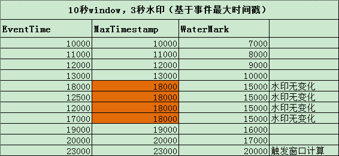
图中是一个10s大小的窗口，10000～20000为一个窗口。当 eventTime 为 23000 的数据到来，生成的 watermark 的时间戳为20000，>= 窗口的结束时间，会触发窗口计算。
- 示例二
1
2
3
4
5
6
7
8
9
10
11
12
13
14
15public class TimeLagWatermarkGenerator implements AssignerWithPeriodicWatermarks<MyEvent> {
private final long maxTimeLag = 3000; // 3 seconds
public long extractTimestamp(MyEvent element, long previousElementTimestamp) {
return element.getCreationTime();
}
public Watermark getCurrentWatermark() {
// return the watermark as current time minus the maximum time lag
return new Watermark(System.currentTimeMillis() - maxTimeLag);
}
}
效果解析：
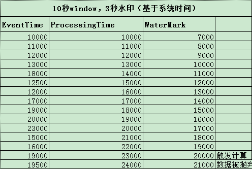
只是简单的用当前系统时间减去最大延迟时间生成 Watermark ，当 Watermark 为 20000时，>= 窗口的结束时间，会触发10000～20000窗口计算。再当 eventTime 为 19500 的数据到来，它本应该是属于窗口 10000～20000窗口的，但这个窗口已经触发计算了，所以此数据会被丢弃。

- 示例3
1
2
3
4
5
6
7
8
9
10
11
12
13
14
15
16
17
18
19
20
21
22
23
24
25
26
27
28
29
30
31
32
33
34
35public class TumblingEventWindowExample {
public static void main(String[] args) throws Exception {
StreamExecutionEnvironment env = StreamExecutionEnvironment.getExecutionEnvironment();
env.setStreamTimeCharacteristic(TimeCharacteristic.EventTime);
DataStream<String> socketStream = env.socketTextStream("localhost", 9999);
DataStream<Tuple2<String, Long>> resultStream = socketStream
// Time.seconds(3)有序的情况修改为0
.assignTimestampsAndWatermarks(new BoundedOutOfOrdernessTimestampExtractor<String>(Time.seconds(3)) {
public long extractTimestamp(String element) {
long eventTime = Long.parseLong(element.split(" ")[0]);
System.out.println(eventTime);
return eventTime;
}
})
.map(new MapFunction<String, Tuple2<String, Long>>() {
public Tuple2<String, Long> map(String value) throws Exception {
return Tuple2.of(value.split(" ")[1], 1L);
}
})
.keyBy(0)
.window(TumblingEventTimeWindows.of(Time.seconds(10)))
.reduce(new ReduceFunction<Tuple2<String, Long>>() {
public Tuple2<String, Long> reduce(Tuple2<String, Long> value1, Tuple2<String, Long> value2) throws Exception {
return new Tuple2<>(value1.f0, value1.f1 + value2.f1);
}
});
resultStream.print();
env.execute();
}
}
运行程序之前，在本地启动命令行监听:
1 | nc -l 9999 |
- 有序的情况下，watermark延迟时间为0
1
2
3
4
5
6
7
8
9
10
11
12
13
14miaowenting@miaowentingdeMacBook-Pro flink$ nc -l 9999
10000 a
11000 a
12000 b
13000 b
14000 a
19888 a
13000 a
20000 a 时间戳20000触发第一个窗口计算，实际上19999也会触发，因为左闭右开的原则，20000这个时间戳并不会在第一个窗口计算，第一个窗口是[10000-20000)，第二个窗口是[20000-30000)，以此类推
11000 a
12000 b
21000 b
22000 a
29999 a 第一个窗口触发计算后，后续来的11000，12000这两条数据被抛弃，29999直接触发窗口计算，并且本身也属于第二个窗口，所以也参与计算了。

- 无序的情况下，watermark延迟时间为3
1
2
3
4
5
6
7
8
9
10
11
12
13
14miaowenting@miaowentingdeMacBook-Pro flink$ nc -l 9999
10000 a
11000 a
12000 b
20000 a 从数据中可以验证，第一个窗口在20000的时候没有触发计算
21000 a
22000 b
23000 a 在23000的时候触发计算，计算内容是第一个窗口[10000-20000)，所以20000，21000，22000，23000属于第二个窗口，没有参与计算。
24000 a
29000 b
30000 a
22000 a
23000 a
33000 a 第二个窗口[20000-30000)，它是在33000触发计算，并且，迟到的数据22000，23000也被计算在内（如果这个数据在水印33000后到达，则会被抛弃），30000和33000是第三个窗口的数据，没有计算

Watermark传播
Tasks 内部有一个 time services，维护 timers ，当接收到 watermark 时触发。例如，一个窗口 operator 为每一个活跃窗口在 time servive 注册一个 timer，当event time大于窗口结束时间时，清除窗口状态。
当 task 接收到 watermark 后，会执行以下操作：
- task 根据 watermark 的时间戳，更新内部的 event_time clock。
- time service 区分出所有时间戳小于更新之后的 event_time 的 timers，对超时的 timer，task 执行回调函数触发计算并发射数据。
- task 发射 watermark，时间戳为更新之后的 event_time。

Flink 会将数据流分成多个 partition，task 维护每个 partition 对应的 watermark。每个 partition 分别将 watermark 更新成接收到的最大值。task 将 event_time clock 更新成所有 partition 的 watermark 的最小值。如果 clock 向前走动，task 处理所有达到触发时间的 timers，并向下游 partitions 传递 watermark 。
状态管理
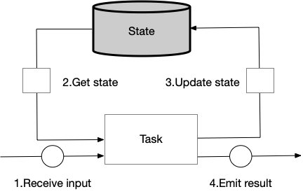
task 接收输入数据，结合 state 作处理。例如，统计接收到记录的数量，接收到一个 record，会向 state 查询当前的 count 大小，此 count + 1，向 state 更新 count 值，向下发射新的 count 值。
state 总是和一个具体的 operator 相关联的。为了让 Flink 运行时感知到 operator 的状态，operator 需要注册它的状态。有两种类型的 state ，分别为 operator state 和 keyed state 。
Operator State
operator state 是 operator tasks 共享的。
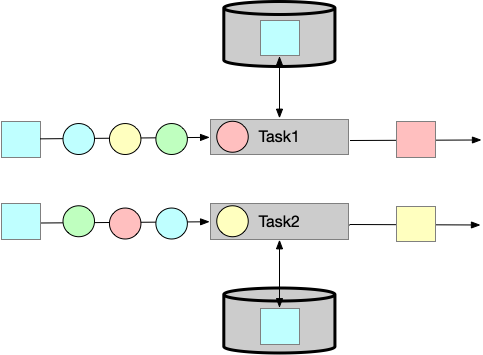
- List state
代表state是一个list
- Union list state
不同于List state，它是在故障的时候或者当一个应用从savepoint启动时被存储。
- Broadcast state
当做checkpoints时或者扩展operator并行度时被使用。
Keyed State
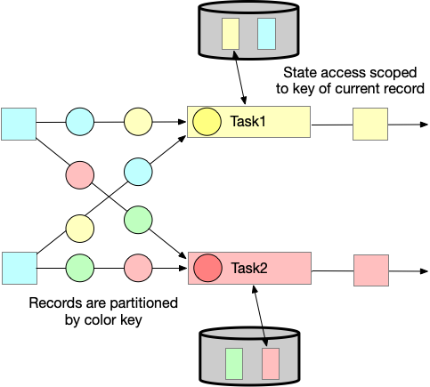
- Value state
为每一个key存储任意类型的单值value ，复杂类型的数据结构也可以被存储在 value state中。
- List state
为每一个key存储一个value的list，list中的value可以是任意类型。
- Map state
为每一个key存储一个k-v的map，map的key、value可以是任意类型。
State Backends
负责两件事情：
- 管理本地状态
- 向远程存储做checkpointing
Scaling Stateful Operators
流式应用通常要调整并行度，状态也需要被重分区到新的task。Flink 将key组织成key group，分配到task上。
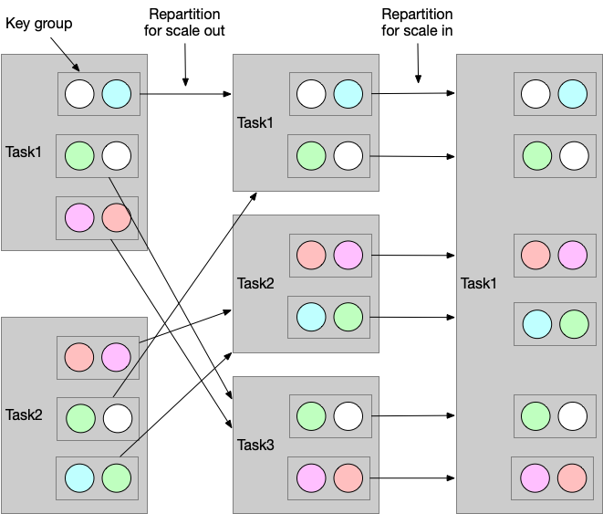
list state 会被按比例平均分配到新的 tasks。如果 list 中的 entries 小于 operator 的并发度，那么有些 task 将以 empty state 启动。
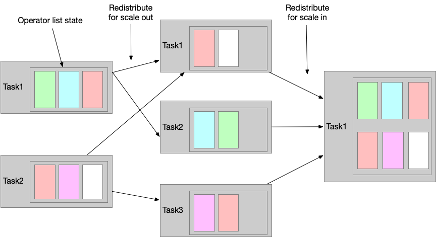
union list state 将被广播到新的 tasks，task 自己选择使用或丢弃其中的状态。
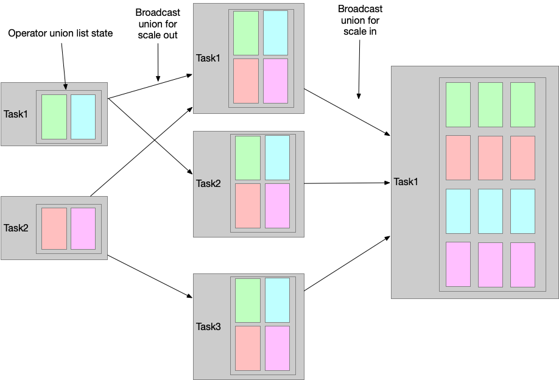
broadcast state 将被复制到新的 tasks， 确保所有的tasks 拥有相同的状态。并发度变小的情况下，多余的 task 直接取消即可。
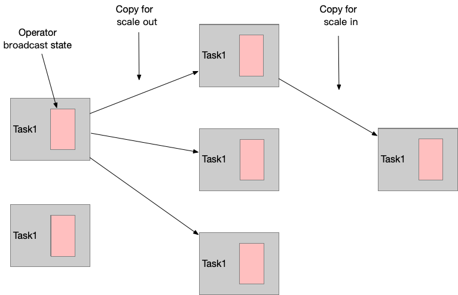
Checkpoints，Savepoints 和状态恢复
需要处理进程被杀、机器故障、网络连接故障等问题。tasks 本地维护各自的状态，Flink 必须保证状态不丢失，并且在发生故障时可以持久化这些状态。
持久化Checkpoints
Flink 的恢复机制是基于应用状态做持久化 checkpoints。持久化 checkpoint 是在某一个时间点复制所有 tasks 的 state，此时所有的tasks都处理了相同的输入数据。
这个过程可以描述为 navie 算法，步骤如下：
- 暂停所有输入流的摄入
- 等待所有 in-flight 数据被完全处理，意味着所有 tasks 都处理了 input 数据
- 做checkpoint，复制所有tasks的state到远程的持久化存储，当所有task复制完成，此次checkpoint也就完成
- 恢复所有流摄入
输入的是一组数字流，数字分奇数和偶数统计和。source task记录消费的offset作为其state，sum tasks记录奇数和与偶数和作为其state。图中记录了input offset为5，统计值为6和9。
从Checkpoint恢复
发生故障时，Flink会从最后一次记录的checkpoint处恢复应用的状态并重启。
持久化 input offset 为5，偶数和为6，奇数和为9。
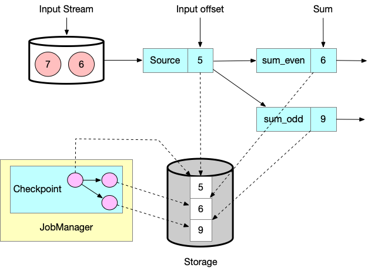
应用恢复的步骤如下：
- 重启整个应用。
- 根据上次完整的checkpoint重置状态。
- 恢复tasks的所有相关进程。
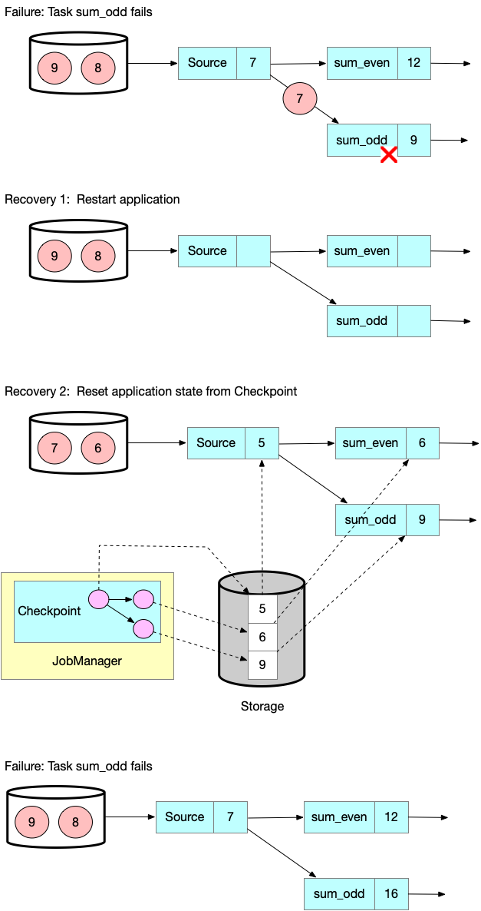
Checkpointing算法
Chandy-Lamport算法。这个算法不会暂停整个应用去做 checkpoint ，解耦checkpointing操作，一些tasks接着处理数据，另一些tasks在持久化它们的状态。
Flink 的 checkpointing 算法使用了一种特殊的数据类型，叫做 checkpoint barrier。类似于 watermark，checkpoint barrier（checkpoint ID） 也随着数据流动。
checkpoint ID 标识 checkpoint barrier 属于那一次 checkpoint 操作，逻辑上讲数据流分成两部分。
所有在 checkpoint barrier 之前的数据状态改变，都属于本次 checkpoint 操作，之后的数据状态改变就属于下一次 checkpoint 操作了。
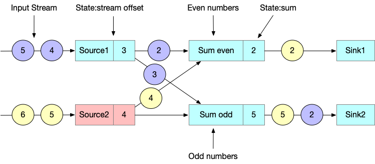
一次 checkpoint 操作是通过 JobManager 向每一个 source task 发送一条带 checkpoint ID 的消息发起的。
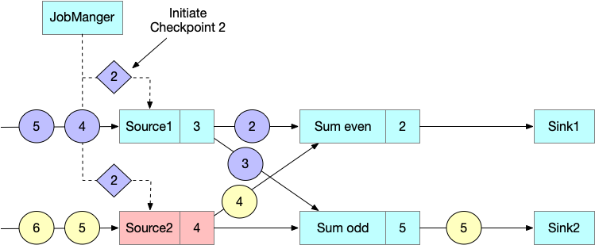
当 source task 接收到上述消息，便会停止发射数据，在 state backend 做本地状态的 checkpoint ，并向所有的下游分区广播发送 checkpoint barrier。持久化完成之后会向 JobManager 发送确认消息，当所有的 checkpoint barrier 发送完毕之后，source task 会继续进行逻辑处理。

当一个下游 task 接收到 checkpoint barrier，会等待上游所有 input partitions 的 checkpoint barrier 到来。等待期间，会继续处理那些还没有发送 checkpoint barrier 的 input partition 的数据，
而已经接收到 checkpoint barrier 的分区数据将不能再被处理，而是会被缓存起来。这一过程叫做 barrier alignment。

当 task 接收到所有上游的 input partitions 的 checkpoint barrier，便发起本 task 的 checkpoint 并向下游所有相连的 tasks 发送 checkpoint barrier。

一旦所有的 checkpoint barrier 都发送完，task 开始处理之前缓存的数据 4 。

最终，checkpoint barriers 流到了 sink task。当 sink task 接收到 checkpint barrier ，会等待 barrier alignment，做 checkpoint ，并向 JobManager 汇报。JobManager 接收到所有 tasks 的 acknowledgement 之后，便标识本次 checkpoint 成功。

Checkpoint的性能影响
Savepoints
Flink的恢复算法是基于状态的 checkpoints ，checkpoints 定期产生并根据一定的策略丢弃，一般用于发生故障时应用重启。但是除此之外，持久化快照还有其他用途。
Flink中最有价值之一且独一无二的特性就是 savepoints ，savepoints 和 checkpoints 使用相同的算法，因此是在 checkpoints 的基础上额外添加了一些 metadata 。
Flink不会自动生成 savepoints ，用户必须额外明确触发 savepoints 的生成。Flink 也不会自动清除 savepoints 。
使用Savepoints
给定一个应用和一个与其兼容的 savepoint，可以从此 savepoint 启动应用。根据 savepoint 中记录的 state 初始化应用的 state。这整个操作类似于应用故障时从 checkpoint 恢复的过程，但是应用故障仅仅是其中一种场景，限制在相同的集群上使用相同的配置重启相同的应用。而从 savepoint 启动应用就没有那么多限制了，可以做如下操作：
- 从 savepoint 启动一个不同但是兼容的应用。这种情况下，可以改动代码逻辑的bug，只要做到 application 和 savepoint 兼容即可，即 application 代码必须要能加载 savepoint 中的状态。
- 可以修改 application 的并行度再启动。
- 可以在不同的集群上启动相同的 application ，这就允许迁移 flink 应用到新的 flink 版本，或者不同的集群，或者是不同的数据中心。
- 可以使用 savepoint 暂停应用，恢复应用。这就可以做到输入端没有数据流入时，当前应用可以释放资源给优先级比较高的应用，最大化利用集群资源。
- 使用 savepoint 作为 application 的版本管理，记录每次版本迭代。
基于以上 savepoint 的强大功能，许多用户会定期生成 savepoints，以便能及时回滚。也可以持续不断的将流应用迁移到数据中心。
从Savepoint启动application
Flink 是如何从 savepoint 中初始化 state 的？
一个 application 由多个 operators 组成，一个 operator 可以定义一个或多个 keyed states 和 operator states，Opeators 被多个 Operator tasks 并发执行。因此一个典型的应用下，状态是分布到不同的 Operator tasks，在不同的 TaskManager 进程中执行的。
以下 application 有3个Operators，OP-1 只有Operator state（OS-1），OP-2 有2个keyed states (KS-1, KS-2)。
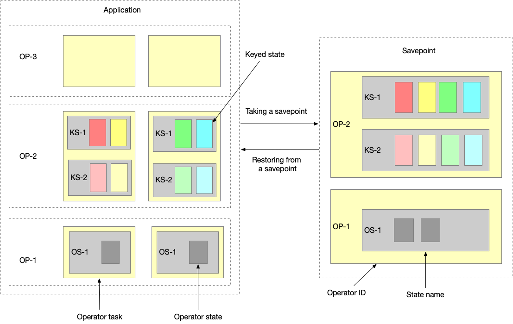
问题
说说Flink中的checkpoint？从checkpoint的恢复流程？
一文搞懂Flink的Exactly Once和At Least Once
Apache Flink管理大型状态之增量Checkpoint详解
Flink中的反压是怎么实现的？
共享内存
Flink网络协议栈
Flink中State管理
State Processor API：如何读取，写入和修改Flink应用程序的状态


先在DataSet API上构建该功能，并将其对DataSet API的依赖性降到最低。
Flink的内存管理
Flink中join的实现
离线 Batch SQL join 的实现
传统的离线 Batch SQL （面向有界数据集的 SQL）有三种基础的实现方式，分别是 Nested-loop Join、Sort-Merge Join 和 Hash Join。
Nested-loop Join 最为简单直接，将两个数据集加载到内存，并用内嵌遍历的方式来逐个比较两个数据集内的元素是否符合 Join 条件。Nested-loop Join 虽然时间效率以及空间效率都是最低的，但胜在比较灵活适用范围广，因此其变体 BNL 常被传统数据库用作为 Join 的默认基础选项。
Sort-Merge Join 顾名思义，分为两个 Sort 和 Merge 阶段。首先将两个数据集进行分别排序，然后对两个有序数据集分别进行遍历和匹配，类似于归并排序的合并。值得注意的是，Sort-Merge 只适用于 Equi-Join（Join 条件均使用等于作为比较算子）。Sort-Merge Join 要求对两个数据集进行排序，成本很高，通常作为输入本就是有序数据集的情况下的优化方案。
Hash Join 同样分为两个阶段，首先将一个数据集转换为 Hash Table，然后遍历另外一个数据集元素并与 Hash Table 内的元素进行匹配。第一阶段和第一个数据集分别称为 build 阶段和 build table，第二个阶段和第二个数据集分别称为 probe 阶段和 probe table。Hash Join 效率较高但对空间要求较大，通常是作为 Join 其中一个表为适合放入内存的小表的情况下的优化方案。和 Sort-Merge Join 类似，Hash Join 也只适用于 Equi-Join。
实时领域 Streaming SQL 中的 Join 与离线 Batch SQL 中的 Join 最大不同点在于无法缓存完整数据集，而是要给缓存设定基于时间的清理条件以限制 Join 涉及的数据范围。根据清理策略的不同，Flink SQL 分别提供了 Regular Join、Time-Windowed Join 和 Temporal Table Join 来应对不同业务场景。
实时Streaming SQL join
相对于离线的 Join，实时 Streaming SQL（面向无界数据集的 SQL）无法缓存所有数据，因此 Sort-Merge Join 要求的对数据集进行排序基本是无法做到的，而 Nested-loop Join 和 Hash Join 经过一定的改良则可以满足实时 SQL 的要求。
Table A 有 1、42 两个元素，Table B 有 42 一个元素，所以此时的 Join 结果会输出 42：
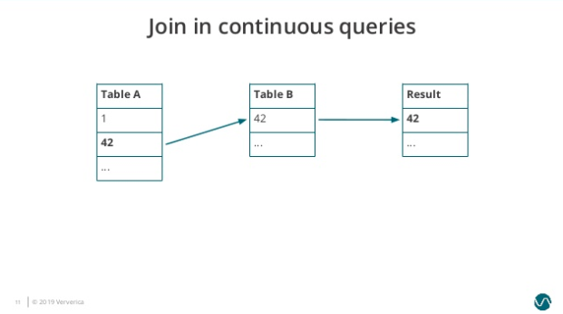
接着 Table B 依次接受到三个新的元素，分别是 7、3、1。因为 1 匹配到 Table A 的元素，因此结果表再输出一个元素 1：
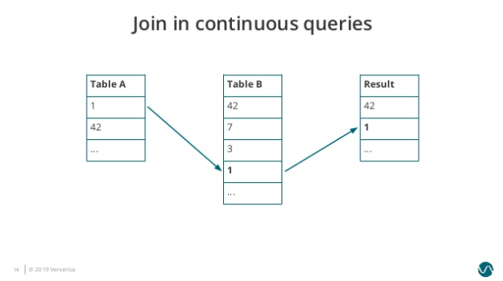
随后 Table A 出现新的输入 2、3、6，3 匹配到 Table B 的元素，因此再输出 3 到结果表。
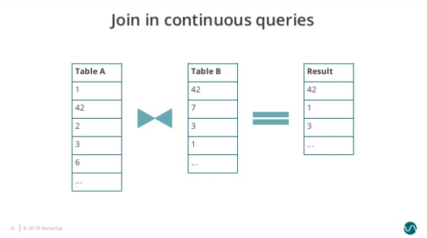
可以看到在 Nested-Loop Join 中我们需要保存两个输入表的内容，而随着时间的增长 Table A 和 Table B 需要保存的历史数据无止境地增长，导致很不合理的内存磁盘资源占用，而且单个元素的匹配效率也会越来越低。类似的问题也存在于 Hash Join 中。
双流join的实现
双流join与传统数据库表join的区别：
- 左右两边的数据集合无穷 - 传统数据库左右两个表的数据集合是有限的，双流JOIN的数据会源源不断的流入。
- JOIN的结果不断产生/更新 - 传统数据库表JOIN是一次执行产生最终结果后退出，双流JOIN会持续不断的产生新的结果。
- 查询计算的双边驱动，双流JOIN由于左右两边的流的速度不一样，会导致左边数据到来的时候右边数据还没有到来，或者右边数据到来的时候左边数据没有到来，所以在实现中要将左右两边的流数据进行保存，以保证JOIN的语义。
数据Shuffle：
分布式流计算所有数据会进行Shuffle，怎么才能保障左右两边流的要JOIN的数据会在相同的节点进行处理呢？在双流JOIN的场景，我们会利用JOIN中ON的联接key进行partition，确保两个流相同的联接key会在同一个节点处理。
数据的保存：
不论是INNER JOIN还是OUTER JOIN 都需要对左右两边的流的数据进行保存，JOIN算子会开辟左右两个State进行数据存储，左右两边的数据到来时候，进行如下操作：
LeftEvent到来存储到LState，RightEvent到来的时候存储到RState；
LeftEvent会去RightState进行JOIN，并发出所有JOIN之后的Event到下游；
RightEvent会去LeftState进行JOIN，并发出所有JOIN之后的Event到下游。

Flink SQL的join
Regular join
Regular Join 是最为基础的没有缓存剔除策略的 Join。Regular Join 中两个表的输入和更新都会对全局可见，影响之后所有的 Join 结果。举例，在一个如下的 Join 查询里，Orders 表的新纪录会和 Product 表所有历史纪录以及未来的纪录进行匹配。
1 | SELECT * FROM Orders |
因为历史数据不会被清理，所以 Regular Join 允许对输入表进行任意种类的更新操作（insert、update、delete）。然而因为资源问题 Regular Join 通常是不可持续的，一般只用做有界数据流的 Join。
Time-windowed join
Time-Windowed Join 利用窗口的给两个输入表设定一个 Join 的时间界限，超出时间范围的数据则对 JOIN 不可见并可以被清理掉。值得注意的是，这里涉及到的一个问题是时间的语义，时间可以是指计算发生的系统时间（即 Processing Time），也可以是指从数据本身的时间字段提取的 Event Time。如果是 Processing Time，Flink 根据系统时间自动划分 Join 的时间窗口并定时清理数据；如果是 Event Time，Flink 分配 Event Time 窗口并依据 Watermark 来清理数据。
1 | SELECT * |
这个查询会为 Orders 表设置了 o.ordertime > s.shiptime- INTERVAL ‘4’HOUR 的时间下界：
并为 Shipmenets 表设置了 s.shiptime >= o.ordertime 的时间下界：
因此两个输入表都只需要缓存在时间下界以上的数据，将空间占用维持在合理的范围。
Temporal Table join
然 Timed-Windowed Join 解决了资源问题，但也限制了使用场景: Join 两个输入流都必须有时间下界，超过之后则不可访问。这对于很多 Join 维表的业务来说是不适用的，因为很多情况下维表并没有时间界限。针对这个问题，Flink 提供了 Temporal Table Join 来满足用户需求。
Temporal Table Join 类似于 Hash Join，将输入分为 Build Table 和 Probe Table。前者一般是纬度表的 changelog，后者一般是业务数据流，典型情况下后者的数据量应该远大于前者。在 Temporal Table Join 中，Build Table 是一个基于 append-only 数据流的带时间版本的视图，所以又称为 Temporal Table。Temporal Table 要求定义一个主键和用于版本化的字段（通常就是 Event Time 时间字段），以反映记录内容在不同时间的内容。
比如典型的一个例子是对商业订单金额进行汇率转换。假设有一个 Oders 流记录订单金额，需要和 RatesHistory 汇率流进行 Join。RatesHistory 代表不同货币转为日元的汇率，每当汇率有变化时就会有一条更新记录。
我们将 RatesHistory 注册为一个名为 Rates 的 Temporal Table，设定主键为 currency，版本字段为 time：
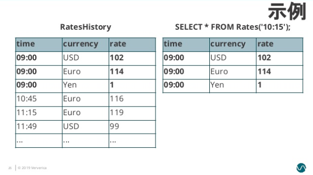
此后给 Rates 指定时间版本，Rates 则会基于 RatesHistory 来计算符合时间版本的汇率转换内容：
1 | SELECT |
值得注意的是，不同于在 Regular Join 和 Time-Windowed Join 中两个表是平等的，任意一个表的新记录都可以与另一表的历史记录进行匹配，在 Temporal Table Join 中，Temoparal Table 的更新对另一表在该时间节点以前的记录是不可见的。这意味着我们只需要保存 Build Side 的记录直到 Watermark 超过记录的版本字段。因为 Probe Side 的输入理论上不会再有早于 Watermark 的记录，这些版本的数据可以安全地被清理掉。
inner join的实现的示例
最直接的两个进行INNER JOIN，比如查询产品库存和订单数量，库存变化事件流和订单事件流进行INNER JOIN，JION条件是产品ID。

双流JOIN两边事件都会存储到State里面，如上，事件流按照标号先后流入到join节点，我们假设右边流比较快，先流入了3个事件，3个事件会存储到state中，但因为左边还没有数据，所有右边前3个事件流入时候，没有join结果流出，当左边第一个事件序号为4的流入时候，先存储左边state，再与右边已经流入的3个事件进行join，join的结果如图 三行结果会流入到下游节点sink。当第5号事件流入时候，也会和左边第4号事件进行join，流出一条jion结果到下游节点。这里关于INNER JOIN的语义和大家强调两点：
INNER JOIN只有符合JOIN条件时候才会有JOIN结果流出到下游，比如右边最先来的1，2，3个事件，流入时候没有任何输出，因为左边还没有可以JOIN的事件；
INNER JOIN两边的数据不论如何乱序，都能够保证和传统数据库语义一致，因为我们保存了左右两个流的所有事件到state中。
left outer join的实现
LEFT OUTER JOIN 可以简写 LEFT JOIN，语义上和INNER JOIN的区别是不论右流是否有JOIN的事件，左流的事件都需要流入下游节点，但右流没有可以JION的事件时候，右边的事件补NULL。同样我们以最简单的场景说明LEFT JOIN的实现，比如查询产品库存和订单数量，库存变化事件流和订单事件流进行LEFT JOIN，JION条件是产品ID。

上图主要关注点是当左边先流入1，2事件时候，右边没有可以join的事件时候会向下游发送左边事件并补NULL向下游发出，当右边第一个相同的Join key到来的时候会将左边先来的事件发出的带有NULL的事件撤回（对应上面command的-记录，+代表正向记录，-代表撤回记录）。这里强调三点：
左流的事件当右边没有JOIN的事件时候，将右边事件列补NULL后流向下游；* 当右边事件流入发现左边已经有可以JOIN的key的时候，并且是第一个可以JOIN上的右边事件（比如上面的3事件是第一个可以和左边JOIN key P001进行JOIN的事件）需要撤回左边下发的NULL记录，并下发JOIN完整（带有右边事件列）的事件到下游。后续来的4，5，6，8等待后续P001的事件是不会产生撤回记录的。
在Apache Flink系统内部事件类型分为正向事件标记为“+”和撤回事件标记为“-”。
多级LEFT JOIN会让流上的数据不断膨胀，造成JOIN节点性能较慢，JOIN之后的下游节点边堵(数据量大导致，非热点)。
双流join的state数据结构
数据结构：
Map<JoinKey,Map<rowDara,count>>
第一级MAP的key是Join key，比如示例中的P001， value是流上面的所有完整事件;
第二级MAP的key是行数据，比如示例中的P001, 2，value是相同事件值的个数。
记录重复记录 - 利用第二级MAP的value记录重复记录的个数，这样大大减少存储和读取
正向记录和撤回记录 - 利用第二级MAP的value记录，当count=0时候删除该元素
判断右边是否产生撤回记录 - 根据第一级MAP的value的size来判断是否产生撤回，只有size由0变成1的时候（第一条和左可以JOIN的事件）才产生撤回。
双流join的应用优化
NULL造成的热点
假设在实际业务中有这样的特点，大部分时候当A事件流入的时候，B还没有可以JOIN的数据，但是B来的时候，A已经有可以JOIN的数据了，这特点就会导致，A LEFT JOIN B 会产生大量的 (A, NULL),其中包括B里面的 cCol 列也是NULL，这时候当与C进行LEFT JOIN的时候，首先Blink内部会利用cCol对AB的JOIN产生的事件流进行Shuffle， cCol是NULL进而是下游节点大量的NULL事件流入，造成热点。
通过改变join的先后顺序，来保证A LEFT JOIN B后不会产生NULL热点问题：
join reorder之后的结果，可以一定程度消除state存储的性能瓶颈：